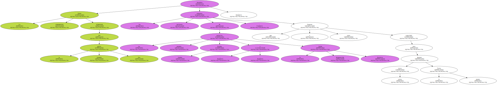
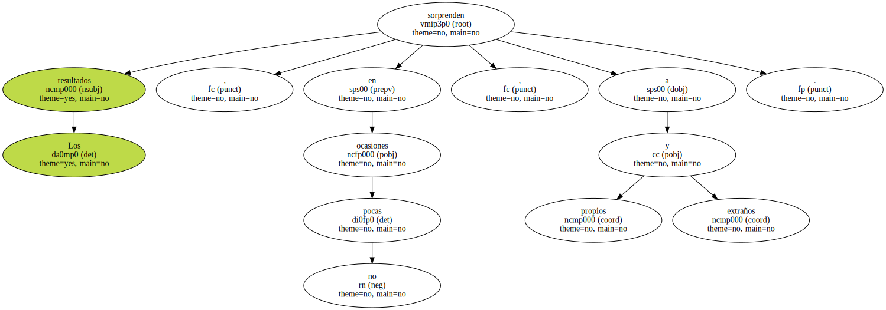
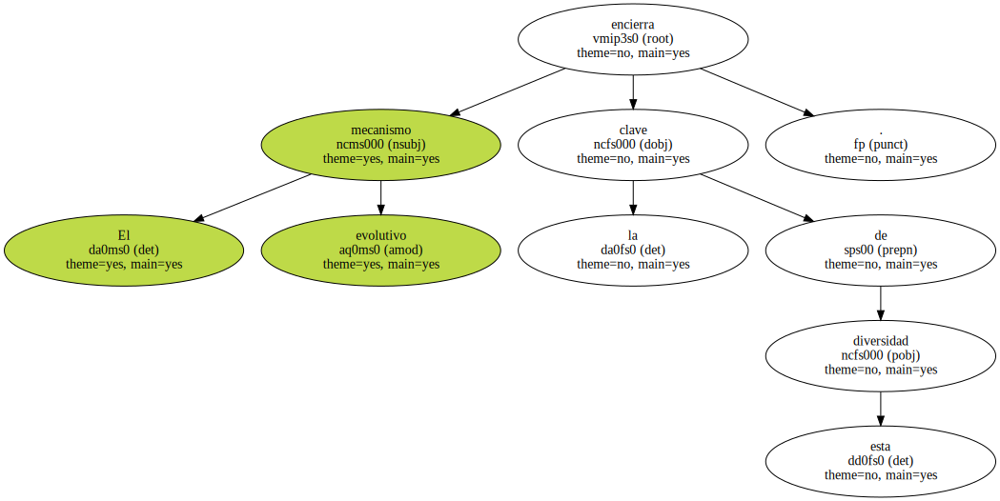
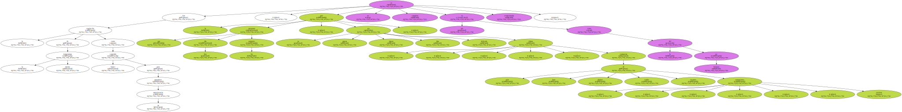

En la actualidad , un ingenio de similar poder destructivo podría ser transportado en un simple maletín de viaje.
La fiebre armamentista alimentada por la llamada guerra fría desorbitó los arsenales nucleares de las grandes potencias - Estados Unidos y la desaparecida Unión Soviética - , que llegaron a tener capacidad para destruir varias veces la propia Tierra.
Felizmente la sensatez se impuso y la tendencia es hoy la contraria : menos arsenales menos cabezas nucleares y más presupuestos para la solidaridad mundial.

Los resultados sorprenden , en no pocas ocasiones , a propios y extraños.
Hoy , las modernas ciencias de la dermatología y la cosmética caminan en ese sentido y centran todo su empeño en aislar los principios inmediatos que hacen posible la regeneración de las células epiteliales o de los cabellos.
Uno de los más modernos tratamientos anticalvicie se compone precisamente de un liofilizado de líquido ammiótico , el que protege a los fetos , unido a un preparado azufrado de origen orgánico llamado S Carboximetilcisteina.

Pero lo cierto es que mamíferos , aves , reptiles , anfibios , peces e invertebrados presentan netas diferencias en la constitución de sus respectivas pieles , cosa que se advierte a simple vista.
Una cebra , un águila real , una serpiente de cascabel , una rana bermeja , un leucisco cabezudo , un grillo o una simple araña de jardín tienen muy poco que ver entre sí en lo que se refiere a su atuendo de protección frente a las inclemencias atmosféricas.
El mecanismo evolutivo encierra la clave de esta diversidad.
Con la regulación de la temperatura interna como cometido básico para garantizar su supervivencia , la piel que presentan hoy día los animales , ya sea gruesa , áspera , fina , delicada , vistosa ; compuesta de pelo , lana , plumas , cerdas , escamas , caparazones , etcétera , no es tan completa ni evolucionada como la del ser humano.
De entre todas las especies , la que nos es , más cercana es la de los grandes simios , de recia pelambre repartida por todo su cuerpo en función de una larga serie de atribuciones que desempeña a la perfección.
El brazo , por ejemplo , presenta el pelo curiosamente vuelto hacia arriba , detalle que han explicado los científicos constatando que sólo así evita el primate que el agua de la lluvia llegue hasta sus manos y le dificulte sus movimientos usuales.